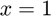

TEST_SPEED
Test if one function is faster to evaluate than another.
Back to Simple Unit Testing Toolbox Contents.
Contents
Syntax
TEST_SPEED(f_fast,f_slow) TEST_SPEED(f_fast,f_slow,args) TEST_SPEED(f_fast,f_slow,args,n_eval) TEST_SPEED(__,name,print) outputs = TEST_SPEED(__)
Description
TEST_SPEED(f_fast,f_slow) tests if the function f_fast is faster to evaluate than the function f_slow, where both functions do not have any input arguments. By default, these functions are both evaluated 1000 times in order to compute an average evaluation time.
TEST_SPEED(f_fast,f_slow,args) tests if the function f_fast is faster to evaluate than the function f_slow when both are given the input arguments specified by args. By default, these functions are both evaluated 1000 times in order to compute an average evaluation time.
TEST_SPEED(f_fast,f_slow,args,n_eval) does the same as the syntax above, but also specifies the number of times the functions should be evaluated when computing the average evaluation time.
TEST_SPEED(...,name,print) does the same as the syntaxes above, but also allows the user to specify a test name, and whether or not to print the test results to the Command Window. This syntax is primarily used when defining unit test classes.
outputs = TEST_SPEED(...) also returns the test outputs.
Input/Output Parameters
| Variable | Description | Format | |
| Input | f_fast | function handle for faster function | 1×1 function_handle |
| f_slow | function handle for slower function | 1×1 function_handle |
|
| args | (OPTIONAL) input arguments to functions (defaults to empty cell array) | cell array | |
| n_eval | (OPTIONAL) number of times to evaluate functions when determining average evaluation time (defaults to 1000) | 1×1 double |
|
| name | (OPTIONAL) test name (defaults to empty string) | char | |
| (OPTIONAL) true if test result should be printed to Command Window, false otherwise (defaults to true) | 1×1 logical |
||
| Output | outputs | test outputs
- passed (1×1 logical) → true if test passed, false otherwise - result (char) → string storing result of test - message (char) → string storing additional diagnostic message |
1×1 struct |
Example #1: Passed test.
Let's define two functions.
f1 = @(x) x; f2 = @(x) x*sin(asin(x))*cos(acos(x))*tan(atan(x));
Clearly, f1 will be faster to evaluate than f2. Testing this at ,
TEST_SPEED(f1,f2,{1});
Passed.
Example #2: Failed test.
Let's consider the same functions as in the previous example.
f1 = @(x) x; f2 = @(x) x*sin(asin(x))*cos(acos(x))*tan(atan(x));
From Example #1, we know that f1 evaluates quicker than f2. Therefore, if we test if f2 is faster than f1, we should get a failed test result.
TEST_SPEED(f2,f1,{1});
FAILED.
>>>> Average evaluation time for function specified as faster function: 2.5842e-07 s
>>>> Average evaluation time for function specified as slower function: 1.6679e-07 s
Example #3: Changing the number of evaluations.
Due to how MATLAB compiles code, the same code ran twice in a row can differ greatly in evaluation time. Therefore, we evaluate the functions a large number of times to get an average evaluation time. By default, we evaluate the functions 1000 times, but we may want to choose a smaller number of evaluations if the function itself takes a long time to evaluate (could lead to a test that takes minutes or hours to run if we repeat the function evaluation 1000 times). Let's repeat Example #1, but using 100 function evaluations this time around.
f1 = @(x) x;
f2 = @(x) x*sin(asin(x))*cos(acos(x))*tan(atan(x));
TEST_SPEED(f1,f2,{1},100);
Passed.